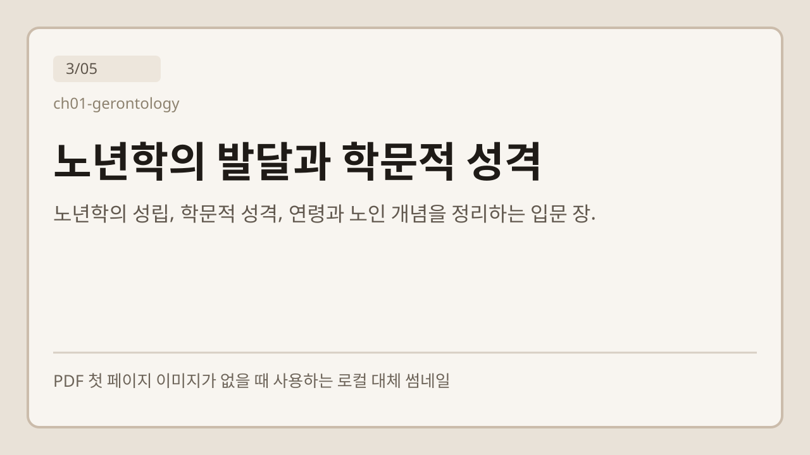
교재 장 날짜 미정
9/9 준비됨
읽기 01
노년학의 발달과 학문적 성격
노년학연령 개념교재
성인노년학 읽기 사이트
전체 글, 핵심 요약, 번역, 개념, 헷갈리는 포인트, 퀴즈, 시험 정리를 오프라인으로 이어 보는 학습 흐름.
현재 로컬 읽기 자료 목록 전체를 기준으로 만드는 정적 학습 사이트입니다. 로컬 파일에서 확인되지 않은 메타데이터는 보수적으로 임시 표시로 남깁니다.
기준 파일
manifest/readings.json
읽기 자료
27개
생성 페이지
123/255
동작 방식
오프라인 전용

교재 장 날짜 미정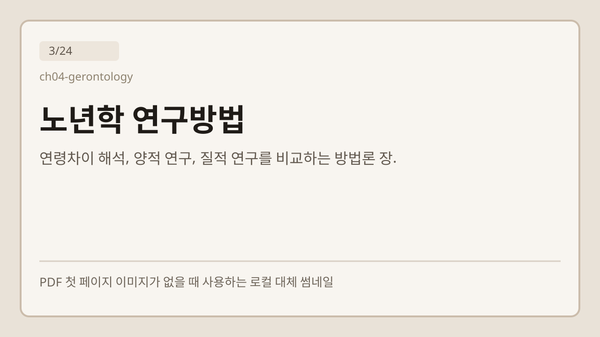
교재 장 날짜 미정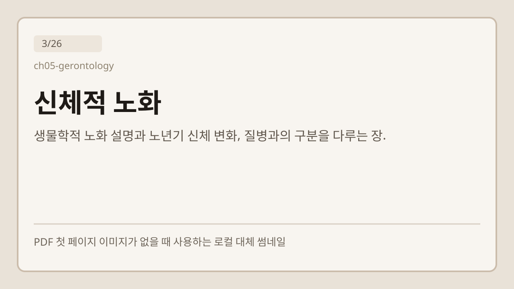
교재 장 날짜 미정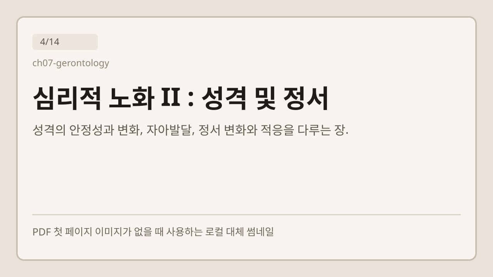
교재 장 날짜 미정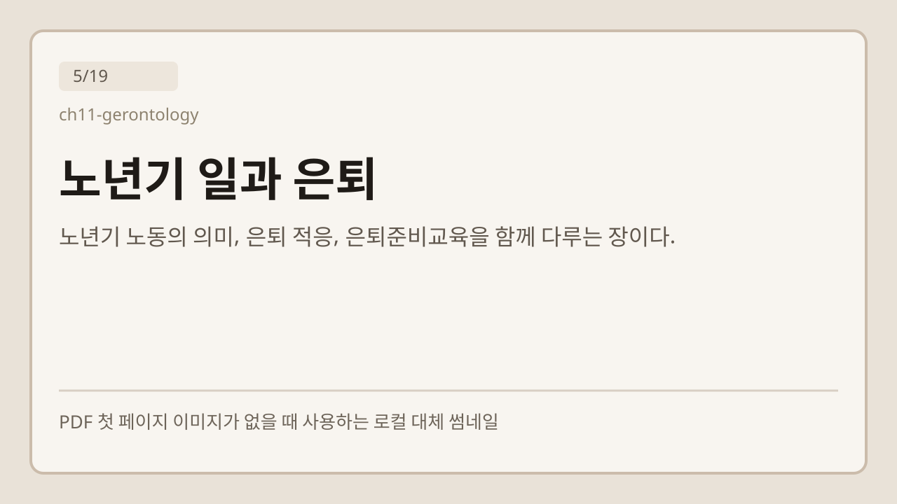
교재 장 날짜 미정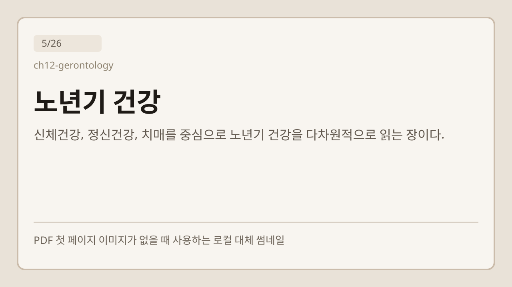
교재 장 날짜 미정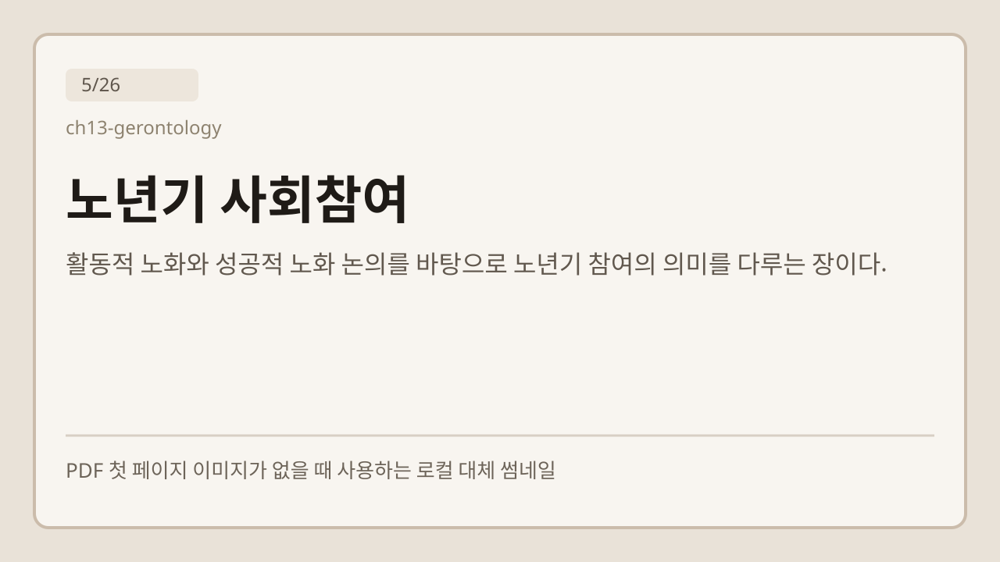
교재 장 날짜 미정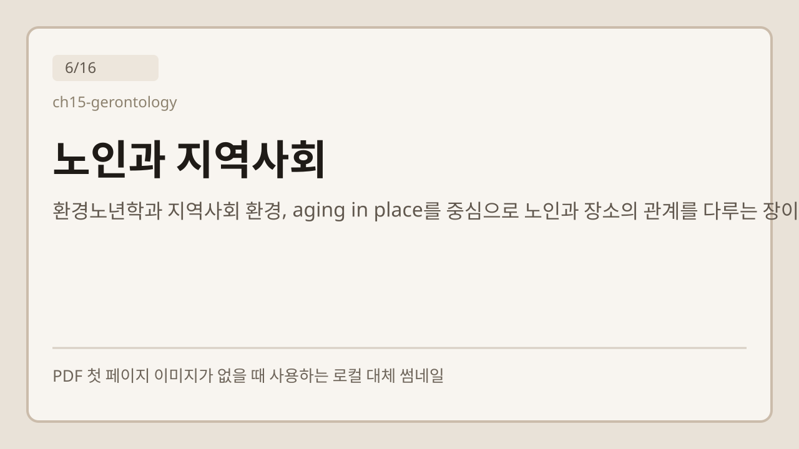
교재 장 날짜 미정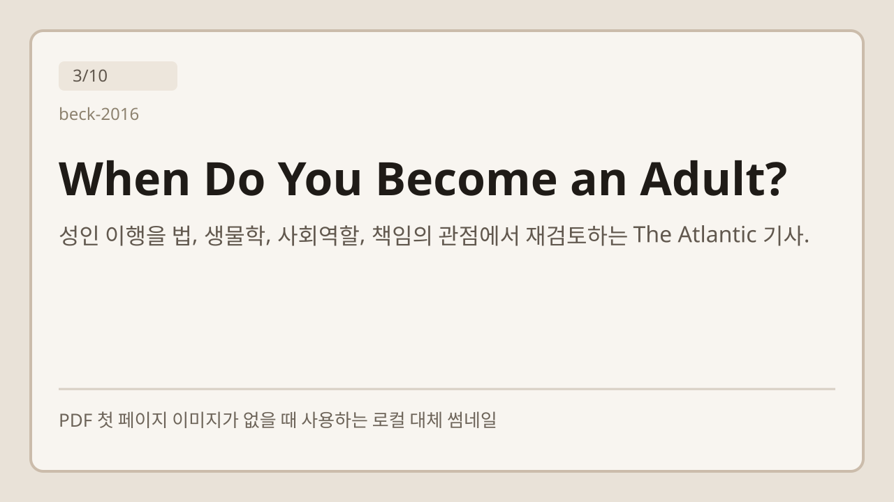
기사 날짜 미정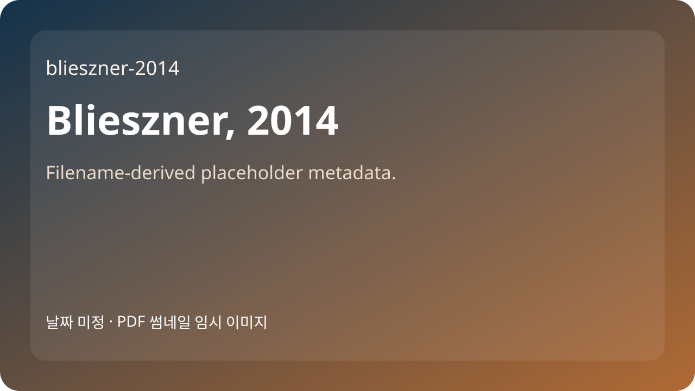
기사 날짜 미정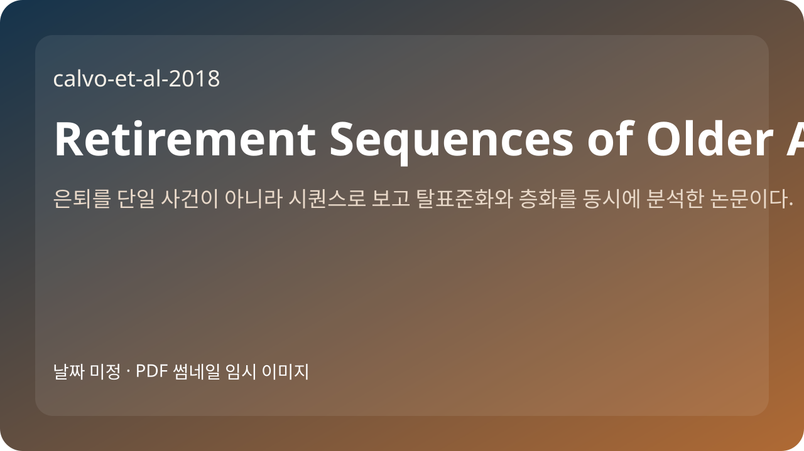
기사 날짜 미정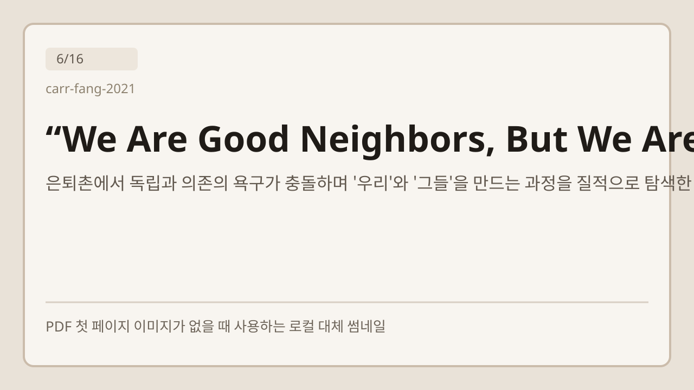
기사 날짜 미정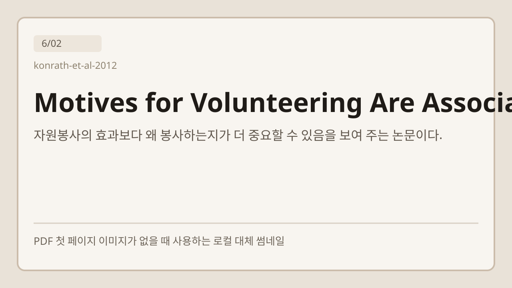
기사 날짜 미정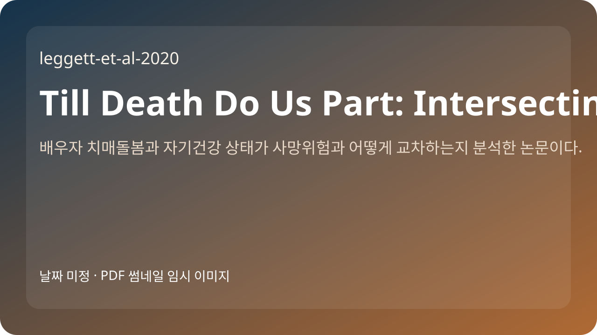
기사 날짜 미정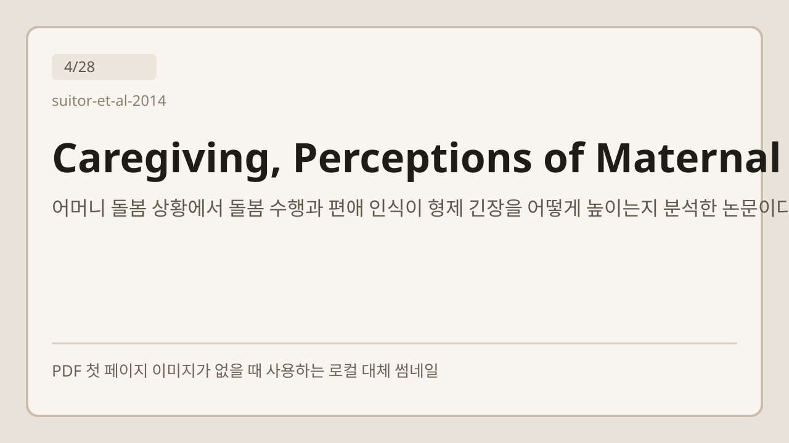
기사 날짜 미정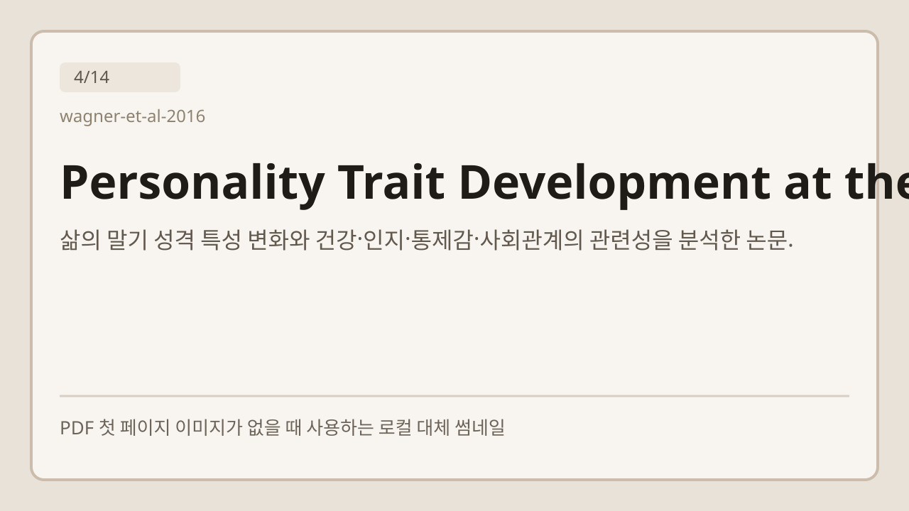
기사 날짜 미정검색어, 유형, 태그 조건을 조정해 다시 확인해 주세요.